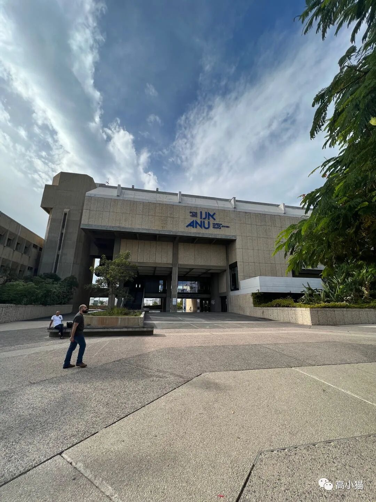
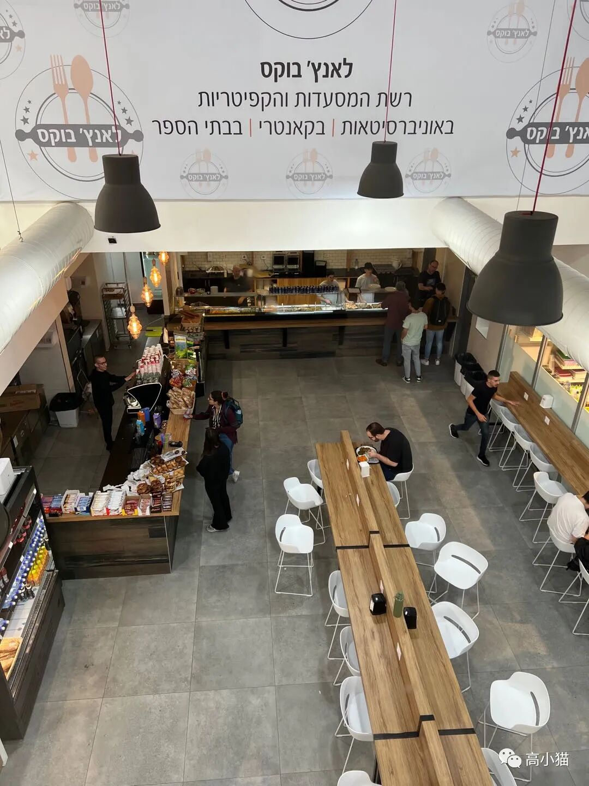
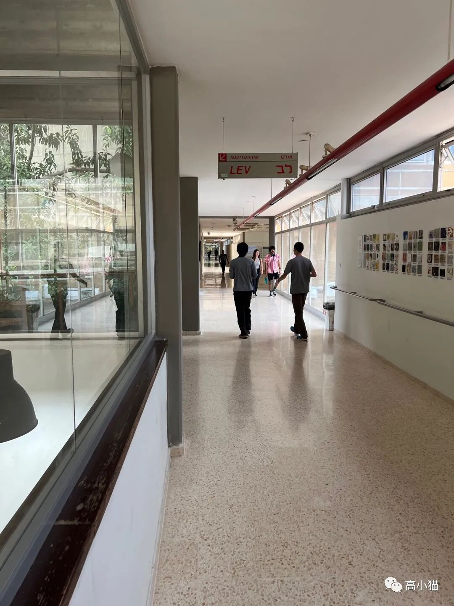
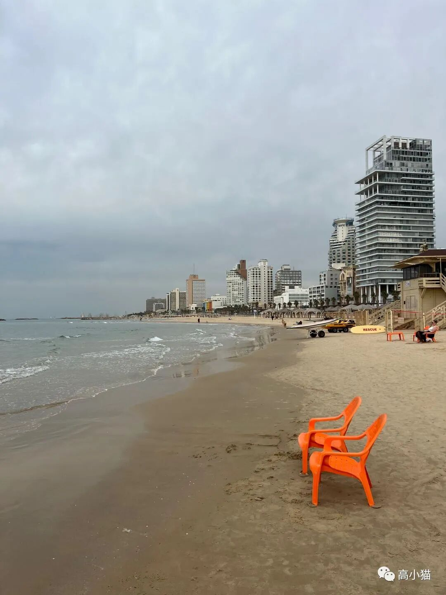
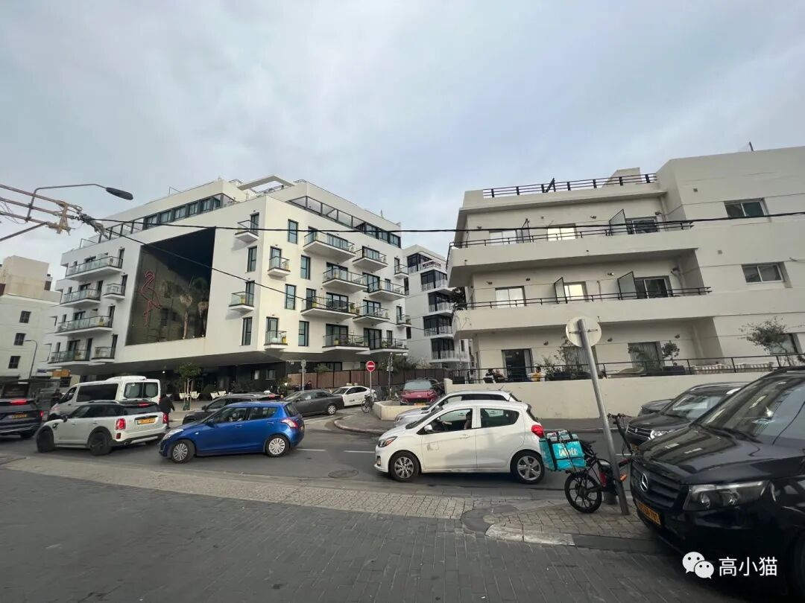
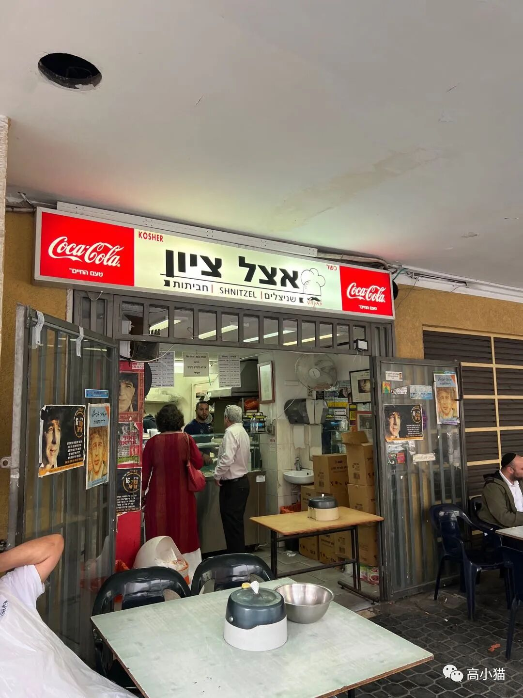
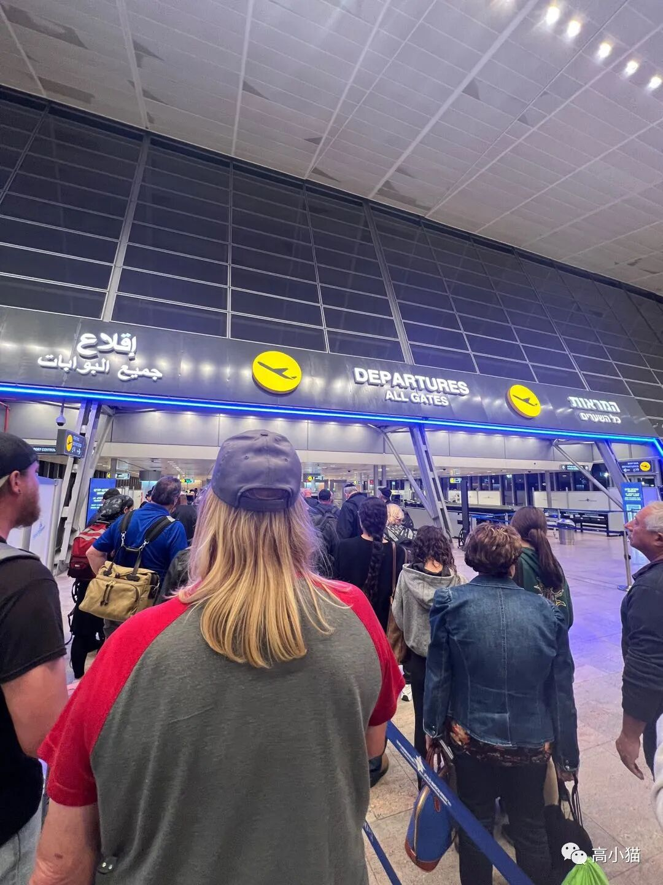
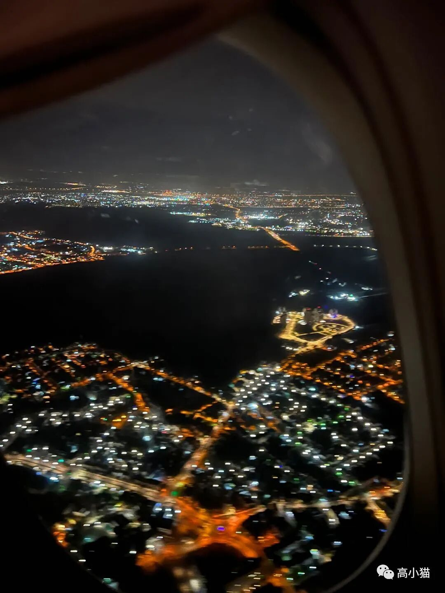

（回到旧金山补最后一天的行程，最后一天感觉平淡无奇，到家以后也没有写作的热情了…）
在以色列的最后一天，我去了以色列经济最发达的城市：特拉维夫。据说这个城市是全世界富豪密度最高的城市，平均每100个人里就有1个人是百万富翁。
我在这个城市的第一站是特拉维夫大学。这个是以色列排名第二的大学，世界大学排名似乎也并不是很高，200名不到的样子。不过据说从这个学校里走出了很多厉害的创业公司。
学校整体感觉并没有特别国际化，除了一些路牌有英文以外，我在学校教学楼里看到的基本上全部是希伯来语，学生也感觉是清一色的以色列人，外国留学生比较少。
不过我在知乎上看到不少中国人有去那边留学的经历，据说特拉维夫大学有和清华的交换项目。可能我从外面看到的还是很片面吧。
特拉维夫大学的某建筑
特拉维夫大学的某食堂
走廊之后去了特拉维夫著名的海滩。这里的海滩确实很漂亮，沙子特别细，感觉要比坎昆的沙滩还要漂亮。在海滩上玩的人也特别多。

海滩
海滩边的城区
一家pita夹炸鸡排的小店在特拉维夫城区里开车真的很痛苦。相比起美国来说，这里的人们开车特别急躁，动不动就会嘟喇叭，车与车之间也更加近，不像美国这边大家开车都比较客气，会愿意让别的车子换道。
之后还去了特拉维夫市中心一个新开的商场。特拉维夫的富豪虽然非常多，商业却并不是很发达，商场看上去比较小，东西也不是很多（相比起美国来说）。不知道是不是因为犹太教的教义教导人们要节俭，导致以色列普遍消费不振。

以色列机场这一天的傍晚，我赶去了特拉维夫机场。传说中的以色列的安检是有名得严格的，因此我足足提早了5个小时到机场，留了足够多的时间。也许因为我飞的时间不是周末的原因，虽然安检步骤繁琐，但是人不太多，因此速度还是挺快的，一个多小时就到了登机口了。

拜拜以色列这次的行程就这样全部结束了～从特拉维夫到旧金山有直飞的航班，15个小时就到了，还是很方便的。
完